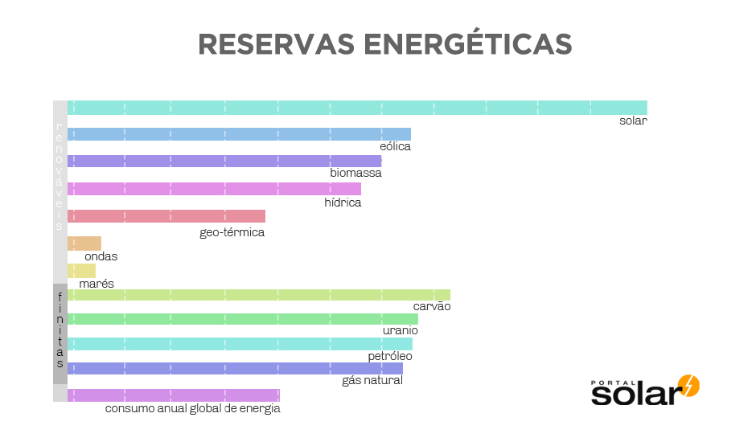

Save Energy
Por uma energia mais limpa


Desenvolvido por fatecanos
A energia solar é uma energia alternativa, renovável e sustentável que funciona utilizando a luz solar como fonte de energia e pode ser aproveitada e utilizada por diferentes tecnologias, como: aquecimento solar, energia solar fotovoltaica e energia heliotérmica.
O conceito de energia solar é comumente associado à energia fotovoltaica, que é a geração de energia elétrica usando a luz do sol como fonte de energia. Portanto, pode-se dizer que energia solar e energia fotovoltaica são a mesma coisa.
Na energia solar fotovoltaica, quando a luz do sol é captada por painéis solares, ocorre a transformação da corrente elétrica para utilização em residências, comércios e indústrias.
As principais características são:
A energia fotovoltaica é hoje a fonte de energia limpa que mais cresce no mundo, e pode ser diretamente convertida em energia elétrica. Ela usa materiais semicondutores como o silício cristalino para converter a energia luminosa em energia fotovoltaica.
A energia fotovoltaica existe a mais de 100 anos e hoje é utilizada para gerar energia elétrica para milhares de residências e indústrias no mundo todo. Para ela ser aproveitada para gerar energia elétrica para casas e empresas, as células fotovoltaicas (foto à direita) precisam ser montadas dentro de um painel solar visando proteção e durabilidade e por sua vez, este painel solar, será conectado em outros painéis em um sistema solar fotovoltaico.
É uma forma de energia alternativa e, uma tecnologia, para o aproveitamento da energia solar para gerar energia térmica ou energia elétrica para uso na indústria e residências. A primeira instalação de equipamentos de energia solar térmica ocorreu no deserto do Saara, aproximadamente em 1910, quando um motor foi alimentado pelo vapor produzido através do aquecimento da água utilizando-se a luz solar.
Esta é uma outra forma de se utilizar o calor da energia solar para gerar energia elétrica. Na maioria das vezes utilizam-se concentradores, como espelhos, para focar a energia em um ponto específico, seja no topo de uma torre ou em um tubo a vácuo, para aquecer o líquido que há dentro e usar este líquido para gerar vapor e alimentar uma turbina elétrica a vapor. Nas fotos abaixo você consegue ver estes dois tipos de tecnologias de energia solar utilizadas para gerar energia limpa.
A energia do sol é considerada como inesgotável do ponto de vista humano. O potencial da energia solar é excepcional em comparação com todas as outras fontes de energia.
Veja abaixo uma pesquisa feita pelo PortalSolar sobre o potencial da energia solar em comparação com as outras fontes de energia. Nessa imagem, vemos o potencial anual das energias finitas e das energias alternativas, que são consideradas renováveis.
A energia solar é considerada uma fonte renovável de energia, já que é obtida por meio de uma fonte inesgotável: o Sol. Apesar de apresentar inúmeros benefícios para o meio ambiente, o uso dessa fonte energética apresenta também algumas desvantagens. Observe o quadro abaixo:
| Vantagens | Desvantagens |
|---|---|
| Fonte renovável e inesgotável de energia. | Para ser fabricado, um painel solar consome grande quantidade de energia, que, às vezes, é maior do que a própria energia gerada por ele. |
| Não poluente. | Preços elevados em relação à produção de energia por meio de fontes não renováveis. |
| Exige pouca manutenção em suas centrais de produção. | Produção variável de acordo com as condições atmosféricas. |
| Painéis solares cada vez mais eficientes e com custos cada vez mais baixos. | Durante a noite, a energia solar não é produzida. |
| Fonte de energia viável para lugares afastados e de difícil acesso, visto que não necessita de grandes investimentos na manutenção de equipamentos. | Regiões localizadas em latitudes médias/altas produzem pouca energia durante o inverno. |
| Excelente fonte de energia para países tropicais, como o Brasil, cuja radiação solar costuma ser intensa durante boa parte do ano. | O armazenamento desse tipo de energia é pouco eficiente se comparado à energia hidrelétrica, aos combustíveis fósseis e à biomassa. |
| Requer áreas menos extensas para ser produzida. | Requer um sistema eficiente de armazenamento. |
O Brasil foi o primeiro país subdesenvolvido a fabricar células fotovoltaicas. Por estar localizado próximo à Linha do Equador, uma região de alta incidência solar, o país conta com um cenário extremamente favorável para a geração energética a partir da energia solar. Além disso, é abundante em silício, matéria-prima usada para fabricação das células fotovoltaicas.
Atualmente, o Brasil possui cerca de 30 mil geradores de energia fotovoltaica. De acordo com a Abrava (Associação Brasileira de Refrigeração, Ar-Condicionado, Ventilação e Aquecimento), existem no país cerca de 500 mil coletores solares residenciais. A previsão é de que Brasil fechará o ano de 2018 com uma capacidade instalada de energia solar próxima aos 2,5 gigawatts, eficiência cerca de 115% maior em relação ao ano anterior.
No país, há ainda alguns projetos a respeito da geração da energia heliotérmica, principalmente na região Nordeste. Em 2010, o Ministério de Minas e Energia e o Ministério da Ciência, Tecnologia e Inovação iniciaram um acordo para a construção de plataforma de pesquisa em Petrolina, Pernambuco, com o objetivo de introduzir a energia solar no mercado brasileiro.
Outro projeto é o SMILE (Sistema Solar Híbrido com Microturbina para Geração de Eletricidade e Cogeração de Calor na Agroindústria), cujo objetivo é construir duas usinas solares para geração de eletricidade integrada às atividades agroindustriais. A previsão é que seja construída uma usina em Pirassununga, no estado São Paulo, e outra em Caiçara do Rio do Vento, no Rio Grande do Norte.
disso, os custos para geração de energia solar ainda são bastante elevados se comparados a outras fontes de energia, como a hidráulica e os combustíveis fósseis. A instalação de um sistema de energia solar no Brasil custa cerca de 3,5 mil euros por kWp (quilo-watt pico). O elevado custo de instalação, somado à falta de informação a respeito da efetividade dos painéis fotovoltaicos, explica o fato de a energia solar ainda não ter alcançado boa parte das residências, estabelecimentos e indústrias no Brasil. Sendo assim, o país ainda não se configura entre os líderes na produção e no uso de energia solar.
Apesar do crescimento do uso da energia solar nos últimos anos, essa forma energética representa apenas 1,3% da energia elétrica gerada no mundo.
Quando o assunto é uso de energia solar, a China aparece como líder no ranking de países que investem nesse setor, representando cerca de 26% das instalações de energia solar do mundo. Países como Estados Unidos e Japão também se destacam, cada um representando, aproximadamente, 13% da produção.
Veja a seguir a lista dos países líderes em produção de energia solar:
| China | Em 2016, a China representou cerca de 40% da capacidade solar instalada no mundo. |
|---|---|
| Alemanha | É o país com a maior capacidade solar instalada por pessoa, cerca de 500 watts por habitante. |
| Japão | É o segundo país com a maior capacidade solar instalada por pessoa, com aproximadamente 337 watts por habitante. |
| Estados Unidos | A energia solar representa cerca de 10% da geração de energia elétrica nesse país. |
| Itália | Cerca de 7,8% da produção de energia elétrica nesse país é representada pela energia solar. |
Desenvolvido por fatecanos